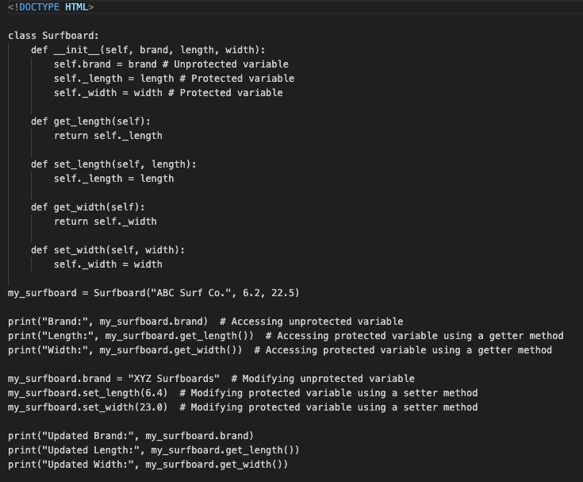
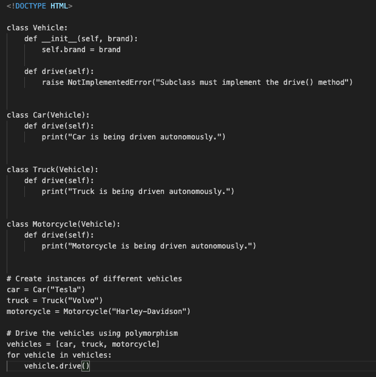
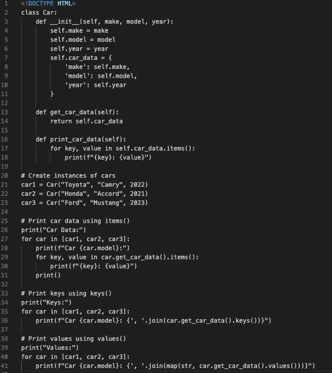
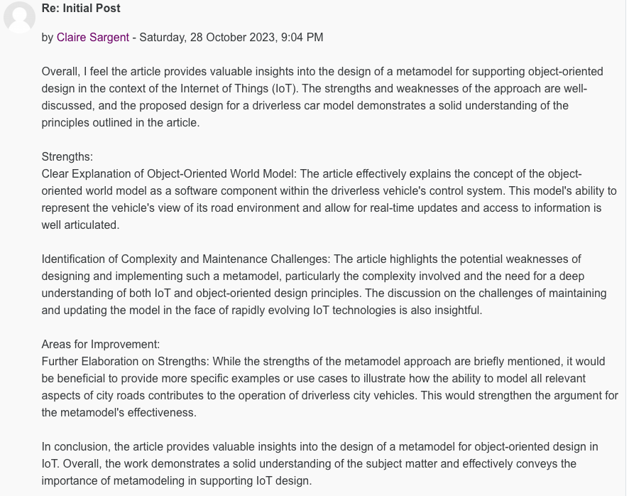
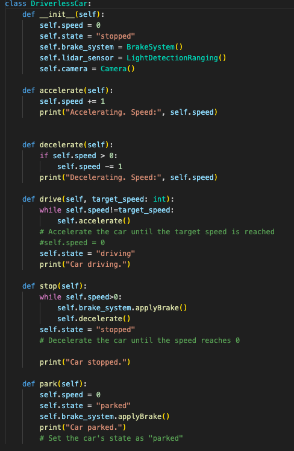
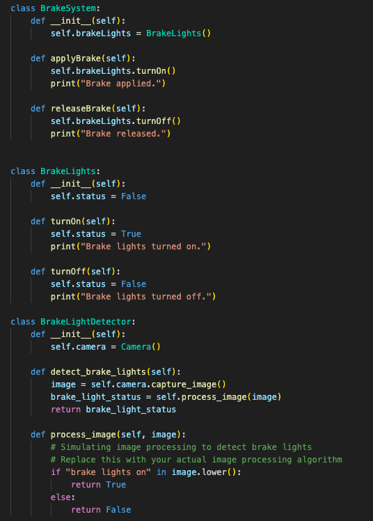
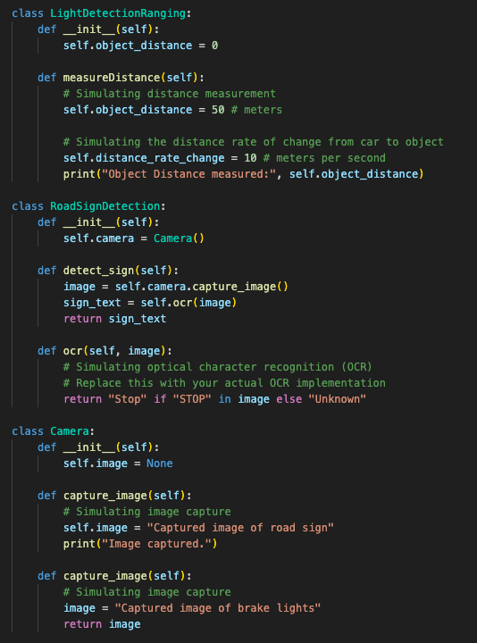
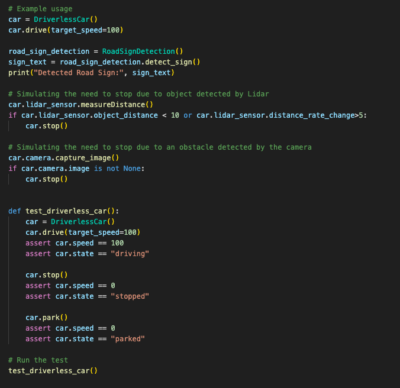

Object-oriented Programming Module 2
Unit 1: An Introduction to Python Programming and the Object-Oriented Programming Paradigm The object-oriented paradigm involves the development of active program units called objects. Objects include functions which describe how an object should respond to various stimuli. The object-oriented approach to a problem is to identify objects involved and describe them as self-contained units. In turn, object-oriented programming languages provide statements for describing objects and their behaviour (Brookshear & Brylow, 2020).Review codio module classes and objects – As python is an object-oriented programming language, almost everything in Python is an object, with its properties and methods. A Class is like an object constructor, or a "blueprint" for creating objects. Within these there are different functions to help the programme run smoothly.
A class describes the contents of the objects that belong to it: it describes an aggregate of data fields called instance variables, and defines the operations called methods. An object is an element or instance of a class; objects have the behaviours of their class. The object is the actual component of programs, while the class specifies how instances are created and how they behave (Phillips, 2018).
Article review/discussion – One aspect that is unexpected… That there are not more studies, published research relating to E-portfolios. The article stated that the researchers found zero published studies. How can we utilise E-portfolios to support and foster learning. E-portfolios can foster learning and show a deeper understanding/learning. It is a continuous reflection of their learning. John Dewey, 1933 said reflection is critical in developing knowledge and people learn best from reflection of their own experiences. Reflective learning paired with transformative learning helps students better understand the topic they are studying more in depth. The Hewett foundation, 2013 stated deeper learning to have 6 levels; master core academic content, think critically, solve complex problems, communicate effectively, work collaboratively, and learn how to learn and develop academic mindsets (Di Silvestro & Nadir, 2020). In conclusion E-Portfolios can help students find greater meaning in their education and develop a better understanding of their learning process which in turn promotes confidence in their abilities within the subject they are studying.
Python Programme:
Unit 2: Object Oriented Analysis - Initial Steps towards Programming in Python Review codio modules class function and class methods – In this lab I learnt a function is a block of code which only runs when it is called. You can pass data, known as parameters, into a function and the function will return data as a result. However, class methods are defined inside a class and are similar to defining a regular function. Comparable to inside an instance method, we use the self keyword to access or modify the instance variables. Same inside the class method, we use the cls keyword as a first parameter to access class variables. Therefore, the class method gives us control of changing the class state (Phillips, 2018).
Initial post for discussion forum:

 Unit 3: UML
Discussion – which UML models are most applicable at different stages of the Software Development Life Cycle:
UML (Unified Modelling Language) is a standardised graphical language used in software engineering to model and document software systems.
It offers a range of diagrams and techniques to represent different aspects of a system.
Throughout the Software Development Life Cycle (SDLC), various UML models are employed to support different stages of development (Rumbaugh, et al. 2004).
During requirements gathering and analysis, use case diagrams are used to capture system interactions and functional requirements.
In the design phase, class diagrams illustrate the structure of the system, helping to create a robust object-oriented design.
Sequence diagrams showcase dynamic behaviour, aiding in understanding system interactions. Activity diagrams model processes and workflows, supporting requirements, analysis, and design.
State transition diagrams depict complex behaviour and state transitions (Brookshear & Brylow, 2020).
It's important to note that the selection and emphasis on UML models may vary based on a project's requirements and development methodology.
Additionally, in modern SDLC approaches, multiple UML models can be used iteratively throughout the development process.
Overall, UML provides a standardised language that facilitates clear communication and understanding among stakeholders involved in software development (Lange et al., 2006).
Unit 4: Applying a UML Model to a Program Implementation: UML in Practice
Applying UML (Unified Modelling Language) models in software development facilitates the implementation process.
UML provides a standardised notation for visualising and documenting software systems.
Key UML diagrams used in practice include use case diagrams, class diagrams, sequence diagrams, and activity diagrams.
By utilising UML diagrams, developers gain a visual representation of the system's structure, behaviour, and interactions, enhancing the implementation process.
UML diagrams also serve as communication tools, fostering collaboration and shared understanding among team members.
It's important to adapt the level and usage of UML based on project needs and complexity, focusing on the most relevant diagrams for a given context (Lange et al., 2006).
Unit 5: More on Classes
Review codio module inheritance –
This week I learned the meaning of inheritance and how to use it within python.
Inheritance allows us to define a class that inherits all the methods and properties from another class.
Parent class or base class is the class being inherited from.
Child class is the class that inherits from another class, also called derived class. It is important to remember when creating a class that inherits the functionality from another class,
to set the parent class as a parameter when creating the child class.
Unit 3: UML
Discussion – which UML models are most applicable at different stages of the Software Development Life Cycle:
UML (Unified Modelling Language) is a standardised graphical language used in software engineering to model and document software systems.
It offers a range of diagrams and techniques to represent different aspects of a system.
Throughout the Software Development Life Cycle (SDLC), various UML models are employed to support different stages of development (Rumbaugh, et al. 2004).
During requirements gathering and analysis, use case diagrams are used to capture system interactions and functional requirements.
In the design phase, class diagrams illustrate the structure of the system, helping to create a robust object-oriented design.
Sequence diagrams showcase dynamic behaviour, aiding in understanding system interactions. Activity diagrams model processes and workflows, supporting requirements, analysis, and design.
State transition diagrams depict complex behaviour and state transitions (Brookshear & Brylow, 2020).
It's important to note that the selection and emphasis on UML models may vary based on a project's requirements and development methodology.
Additionally, in modern SDLC approaches, multiple UML models can be used iteratively throughout the development process.
Overall, UML provides a standardised language that facilitates clear communication and understanding among stakeholders involved in software development (Lange et al., 2006).
Unit 4: Applying a UML Model to a Program Implementation: UML in Practice
Applying UML (Unified Modelling Language) models in software development facilitates the implementation process.
UML provides a standardised notation for visualising and documenting software systems.
Key UML diagrams used in practice include use case diagrams, class diagrams, sequence diagrams, and activity diagrams.
By utilising UML diagrams, developers gain a visual representation of the system's structure, behaviour, and interactions, enhancing the implementation process.
UML diagrams also serve as communication tools, fostering collaboration and shared understanding among team members.
It's important to adapt the level and usage of UML based on project needs and complexity, focusing on the most relevant diagrams for a given context (Lange et al., 2006).
Unit 5: More on Classes
Review codio module inheritance –
This week I learned the meaning of inheritance and how to use it within python.
Inheritance allows us to define a class that inherits all the methods and properties from another class.
Parent class or base class is the class being inherited from.
Child class is the class that inherits from another class, also called derived class. It is important to remember when creating a class that inherits the functionality from another class,
to set the parent class as a parameter when creating the child class.
Polymorphism:
Unit 6: Abstract Methods and Interfaces
Abstract methods and interfaces are fundamental concepts in object-oriented programming (OOP) that help define contracts and enforce behaviour in classes. Abstract methods are method declarations in a class that do not provide an implementation. They serve as placeholders and define a contract for derived classes to implement. They are declared using the `abstract` keyword and are meant to be overridden by derived classes.
They enforce consistent behaviour across different classes and are typically found in abstract classes, which cannot be instantiated (Gamma et al., 2003). Whereas interfaces, define contracts for a group of related classes to follow. They contain method declarations without implementations and are declared using the `interface` keyword. Classes implement interfaces by providing implementations for all the methods defined in the interface. A class can implement multiple interfaces, allowing it to define behaviour from multiple sources.
Interfaces provide complete abstraction of behaviour and enable polymorphism, where objects of different classes that implement the same interface can be treated uniformly (Phillips, 2018). Both abstract methods and interfaces promote code reusability, separation of concerns, and the ability to work with various implementations of a contract. They help in designing flexible and modular code in OOP systems by defining clear contracts and enforcing behaviour across different classes.
Review codio encapsulation –
This week in codio I learnt the term encapsulation and how to use it while programming. Encapsulation uses the idea of wrapping data and the methods that work on data within one unit.
This puts restrictions on accessing variables and methods directly and can prevent the accidental modification of data. To prevent accidental change, an object’s variable can only be changed by an object’s method. Those types of variables are known as private variables.
A class is an example of encapsulation as it encapsulates all the data that is member functions, variables, etc. The goal of information hiding is to ensure that an object’s state is always valid by controlling access to attributes that are hidden from the outside world.
Unit 7: Debugging / Error Handling, Data Structures and Data Search
Discuss the ways in which data structures support object-oriented development:
Data structures are essential in object-oriented development as they provide efficient and structured ways to store and manipulate data within objects. Three important data structures in this context are lists/arrays, sets, and maps/dictionaries (Brookshear & Brylow, 2020). Lists/arrays are used to store collections of objects or attributes within an object, such as items in a shopping cart.
Sets are useful for representing relationships and ensuring uniqueness, like a set of friends for a social network user. Maps/dictionaries allow efficient retrieval of values based on keys and are commonly used to store attributes or properties of objects, such as grades for different subjects in a student class. By selecting and utilising appropriate data structures, data can be organised and managed effectively, which in turn improves performance and maintainability of object-oriented programs. These data structures support the principles of encapsulation and data abstraction, enhancing the design and scalability of object-oriented systems (Brookshear & Brylow, 2020).
Nested dictionary:
UML Diagrams
System Design assignment 1:


Unit 8: Data Structures and Data Search in Practice
Discussion Post response
Review codio module recursion and polymorphism -
Recursion is a programming technique where a function calls itself to solve a problem by breaking it down into smaller subproblems. It involves defining a base case to terminate the recursive calls and a recursive case to make progress towards the base case. Recursion can be an elegant solution for problems that can be divided into smaller, similar subproblems.
On the other hand, polymorphism is a key principle in object-oriented programming that allows objects of different classes to be treated as objects of a common superclass or interface. It is achieved through inheritance and interfaces, enabling method overriding and dynamic binding. Polymorphism promotes code reusability, flexibility, and extensibility by allowing objects to be used interchangeably and facilitating abstraction and loose coupling (Brookshear & Brylow, 2020).
Unit 9: Packaging and Testing
E-portfolio activities- Activity 1: How relevant is the cyclomatic complexity in object-oriented systems? Which alternative metrics do you consider to be more reflective of the complexity of a piece of code, in comparison to the number of independent paths through a program? Support your response using reference to the related academic literature: Cyclomatic complexity is a metric that measures program complexity by counting independent code paths. However, it is not the only indicator of code complexity in object-oriented systems. Other metrics, such as the Maintainability Index, which combines various code characteristics, and the Depth of Inheritance Tree, which measures class hierarchy levels, can provide additional insights. Lines of Code is a simple metric that indirectly reflects complexity but should be used in conjunction with other measures. It's important to remember that no single metric can fully capture code complexity, and a combination of metrics should be used while considering the specific context and goals of the software project (Oman, Hagemeister 1991). References: Oman, P., & Hagemeister, J. (1991). Metrics for Object-Oriented Software. In Proceedings of the 3rd International Conference on Software Engineering and Knowledge Engineering (SEKE 1991). Activity 2 To what extent is cyclomatic complexity relevant when developing object-oriented code? Cyclomatic complexity is relevant in object-oriented development as it helps identify complex code paths, estimate testing needs, and assess maintainability. However, it should be used in combination with other metrics and considerations. High complexity can make code harder to understand and maintain, but it has limitations. It doesn't consider code context, object-oriented design principles, or human factors. Therefore, it should be used alongside other metrics and factors to assess code quality and system complexity (Lanza, Marinescu 2007). References: Lanza, M., & Marinescu, R. (2007). Object-Oriented Metrics in Practice: Using Software Metrics to Characterize, Evaluate, and Improve the Design of Object-Oriented Systems. Springer Science & Business Media. Unit 10: Testing Code in Practice Testing code is crucial in software development to ensure the correctness, reliability, and robustness of the code. Key aspects and approaches to consider include unit testing, test-driven development (TDD), integration testing, regression testing, test automation, continuous integration and continuous testing, code coverage, stress testing and performance testing, and bug reporting and tracking (Phillips, 2018). Unit testing focuses on testing individual code units, while TDD involves writing tests before writing code. Integration testing verifies the interaction between components, and regression testing retests functionalities to prevent regressions. Test automation allows for efficient and consistent testing. Continuous integration and continuous testing ensure that tests are executed regularly. Code coverage measures the extent to which code is covered by tests. Stress testing and performance testing assess system performance under high load. Bug reporting and tracking ensure that issues are captured and resolved. Testing should be integrated into the development workflow, and test suites should be regularly updated to maintain code quality and reliability. Unit 11: Pointers, References & Memory, and Design Patterns
System Implementation assignment 2:
br> Driverless Car Code-     Unit 12: Working with Design Patterns to Structure CodeReferences:
Brookshear, J., et al. Computer Science: an Overview, Global Edition, Pearson Education, Limited, 2019. ProQuest Ebook Central, http://ebookcentral.proquest.com/lib/universityofessex-ebooks/detail.action?docID=5676415. Created from universityofessex-ebooks on 2023-10-29 14:50:22 Dewey J. (1933). How we think: A re-statement of the relation of reflective thinking to the educative process. D.C. Heath. Di Silvestro, F. & Nadir, H. (2021) The Power of ePortfolio Development to Foster Reflective and Deeper Learning in an Online Graduate Adult Education Program. Adult Learning 32(4):154-164. Gamma, E. et al. (2003) Design patterns 2003: Elements of reusable object-oriented software. Boston, MA: Addison-Wesley. Hewett Foundation. (2013). Deeper learning defined. https://hewlett.org/library/deeper-learning-defined/ Kampffmeyer, H. & Zschaler, S. (2007) ‘Finding the pattern you need: the design pattern intent ontology’, in Model Driven Engineering Languages and Systems. [Online]. 2007 Berlin, Heidelberg: Springer-Verlag. pp. 211–225. Lange, C. F. J. et al. (2006) In practice: UML software architecture and design description. IEEE software. [Online] 23 (2), 40–46. Lanza, M., & Marinescu, R. (2007). Object-Oriented Metrics in Practice: Using Software Metrics to Characterize, Evaluate, and Improve the Design of Object-Oriented Systems. Springer Science & Business Media. Oman, P., & Hagemeister, J. (1991). Metrics for Object-Oriented Software. In Proceedings of the 3rd International Conference on Software Engineering and Knowledge Engineering (SEKE 1991). Phillips, D. (2010) Python 3 object oriented programming. Birmingham: Packt Publishing. Reitz, K. & Schlusser, T. (2016) The Hitchhiker’s guide to Python : best practices for development. 1st edition. Sebastopol, California: O’Reilly Media, Inc. Rumbaugh, J. et al. (2004) The unified modeling language reference manual. Second edition. Boston, Massachusetts: Addison-Wesley. Zhou, Z. & Sun, L. (2019) Metamorphic testing of driverless cars. Vol. 62. [Online]. New York: ACM.